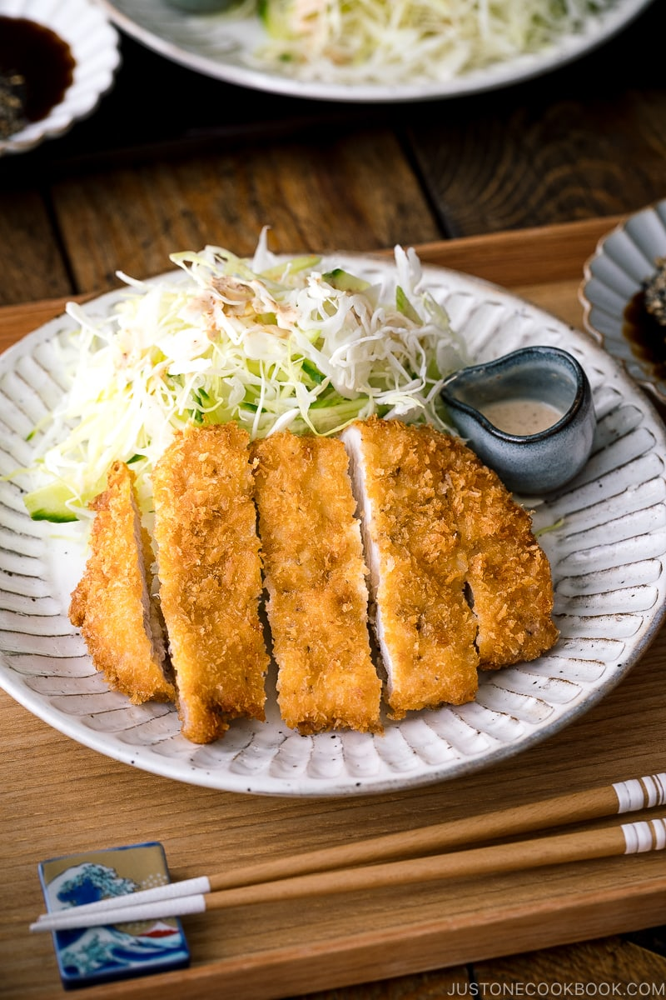

Tonkatsu

Description
Tonkatsu (Japanese Pork Cutlet) is one of the simplest meals you can make at home. Every bite is perfectly crunchy on the outside and juicy on the inside with the added flavor from Tonkatsu Sauce!
Ingredients
- Pork
- Salt and pepper
- Flour
- Egg
- Panko
- Neutral flavored oil for deep frying
- Tonkatsu sauce
- Sesame seeds (optional)
Instructions
- Cut slits into the layer of fat that surrounds your pork loin. No need to cut slits into the non-fat portion.
- Season on both sides with enough salt, black pepper and garlic powder.
- Add all-purpose flour into a large bowl. In a second bowl, beat your eggs, In a third bowl, add your panko.
- Evenly dredge each loin into the flour first, then eggs and lastly panko, ensuring no bald spots.
- In a heavy bottomed pot, heat oil over medium heat (350 F). Check to see if the oil is hot enough by placing a wooden chopstick in the oil and look for bubbles. Carefully lower pork away from you.
- Deep fry on each side for 2-3 minutes or evenly golden brown (or an internal temperature of 145 F).
- Remove and transfer to a cooling rack or paper towel lined plate to rest for 5 minutes before slicing and serving.